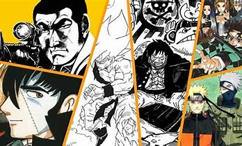
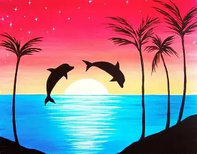

1.Crear videojuegos
En mis tiempos libres veo tutoriales en youtube o en el mismo portal estoy en la aplicaccion de roblox estudios ahi estoy empezando a crear cosas pequeñas y juntandolas en un solo juego personalisar las imagenes y cosas asi pero no lo se al 100% de como usarlo.

2.Leer comics o mangas
Cuando estoy desocupado me pongo ala semana con mis magas favortios leeidos desde paginas de internet ya que no cuento con el dinero para comprarlos fisicamente y leerlos mejor pero igual los leeo normalmente.
3.Jugar videojuegos
Normalmente los fines de semana juego en mi xbox one o mi computadora con mis amigos normalmente juego fornite,overwacht,apex legends,stardevalley y roblox ya dependiendo que tengamos gananas de jugar.
4.Dibujar
Es un pasatiempo que ya hago poco pero no eh dejado de hacerlo pero ya no lo hago como antes que hacia con muchos tipos de pinceles y estilos haora solo los hago en una hoja y un lapiz no como antes incluso los vendia jaja.
